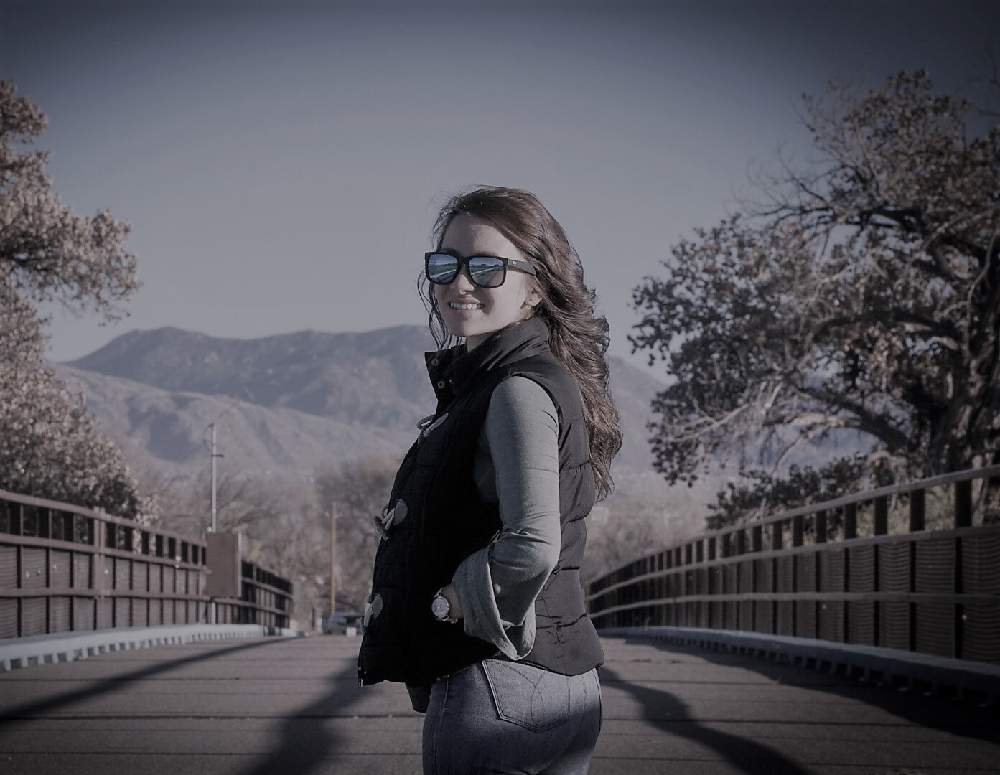

Welcome to my Portfolio

Madalynn The Developer, join me on my journey as a professional Fullstack Web Developer living in Albuquerque, NM.
About Me:
As a full-stack developer in training, I have discovered the components of coding and how various parts work together to make web applications run. I have become familiar with the various technologies used in modern web development with a focus on Front-end with HTML, CSS and React. I have a foundation in JavaScript stack plus the latest technologies including Git, MySQL and software architecture principles. I have an abundance of experience in Version Control with Git and Github, using relational databases with MySQL, Application Deployment, DevOps, and containerization using Docker. I have discovered many benefits and capabilities of the agile project management working along side classmates working together as a team to deliver value early and consistently throughout projects. I am a full time mother of two children, primary provider spending my free time exercising, drawing, messing around with my watercolors, and now coding!! Join me on my journey into the wide , world of professional development! I will chronicle the process of creating applications, add any new insights into the tech community in Albuquerque that I learn, and share resources that I am using on my journey.
Portfolio:
In 2020 my passion for technology led me to enroll in a full-stack web development intensive, immersive program at Central New Mexico Community College. The program allowed me to develop into an aspiring professional developer with a skill set. Check out my portfolio. Clean, modern designs optimized for performance, search engines, and converting users to customers. Creating a Board Game finder..(add Capstone info).
Contact
How can I help?
Drop me a line! I'd love to hear from you and I am happy to answer your questions. Fill out the form and I'll be in touch as soon as possible.
https://github.com/MadalynnTheDeveloper linkedin.com/in/madalynn-sandoval-9181371b7